Design Space Exploration and Optimization Framework
Why a Surrogate?
Optimising the geometry of a capacitive flexure accelerometer requires sweeping four tightly coupled parameters across a large design space. Each ANSYS FEA evaluation takes several minutes; a full sweep is intractable inside an iterative optimisation loop. A surrogate model solves this — trained once on automated FEA data, it returns predictions in milliseconds with near-equivalent accuracy.
Design space
Inputs — 4 geometric parameters
Outputs — 6 physical quantities
Pipeline
How the Model Architecture Was Chosen
Each architectural decision follows directly from a data property or engineering requirement. The flow below traces that reasoning.
Key insight: The correlation heatmap is the gating condition that rules out the entire Gaussian Process family and mandates a multi-output architecture. The ensemble of 20 then recovers the uncertainty information that a single deterministic MLP discards.
Output Correlation Analysis
Before any model is trained, the 6-output correlation structure of the 1200+->point dataset is examined. Strong pairwise correlations (both positive and negative) confirm that the outputs share latent physical dependencies — they cannot be modelled independently. In deeper look, it reveals that the modal frequencies are correlated in positive ways with each others. And inversely with the max deformation and max stree measurements, as representing the underlying physics stating if a model is structurally strong then its sress levels would be smaller and in force application it will deform less, and inversely its natural frequencies of different modes will go higher which is identical to the underlying physics.
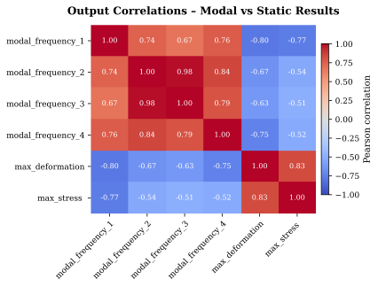
FIG 1 — Pearson correlation matrix across all six outputs. Off-diagonal magnitudes near ±1 rule out independent single-output regressors (GPR, independent SVR).Architecture and Precision Metrics
After architecture search (documented in the repository log), the final configuration is a 4 → 256 → 6 feedforward network, trained as an ensemble of 20 independent models. Inputs are min-max scaled; outputs are unscaled to physical units for evaluation.
| Output | R² Score | MAPE (%) | Grade |
|---|---|---|---|
| Modal Frequency f₁ | 0.9961 | 1.60% | Detailed Design |
| Modal Frequency f₂ | 0.9995 | 0.47% | Detailed Design |
| Modal Frequency f₃ | 0.9987 | 0.61% | Detailed Design |
| Modal Frequency f₄ | 0.9948 | 1.29% | Detailed Design |
| Max Deformation | 0.9849 | 3.56% | Detailed Design |
| Max Stress | 0.9686 | 4.00% | Detailed Design |
Modal frequencies are the cleanest targets (near-linear response surface); deformation and stress pick up nonlinear fillet effects, explaining the slightly higher MAPE.
Probabilistic Output via Ensemble Variance
Each of the 20 models sees the same training data but is initialised differently. Their spread on any given input point quantifies epistemic uncertainty — how confident the ensemble is. High σ flags extrapolation regions where FEA verification should be re-run before committing to a design.
def predict_with_uncertainty(self, X): # Collect predictions from all 20 ensemble members preds = np.array([model.predict(X) for model in self.ensemble]) mean_pred = np.mean(preds, axis=0) # point estimate uncertainty = np.std(preds, axis=0) # epistemic uncertainty (±σ) return mean_pred, uncertainty
A single deterministic MLP gives no signal when it is wrong. The ensemble's σ provides a trust radius: designs with low σ can be accepted directly; high-σ designs are flagged for FEA re-evaluation. This makes the surrogate safe to use in automated optimisation loops.
PCA: Is the 6D Output Space Redundant?
The six outputs are correlated, which raises the question: how many independent degrees of freedom does the response surface actually have? PCA on the output space answers this by finding the minimum number of orthogonal axes that span the data.
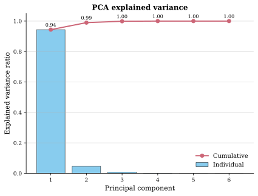
FIG 2 — Cumulative explained variance vs. PC dimension. Three PCs cover 100%; two cover ~99% — the 6D output space is effectively 2–3 dimensional.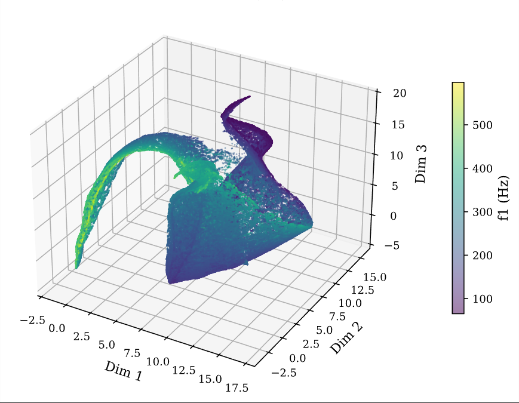
FIG 3 — 3D response surface of f₁ in PC space. The smooth, near-planar structure confirms the surrogate has learned a well-conditioned, low-dimensional mapping.2D Manifold Coloured by Input Parameters
The 6D output space is projected to 2D via PCA (98.98% variance retained). Each of the four input parameters is used as the colour axis to reveal which geometric variables drive which directions of the manifold.
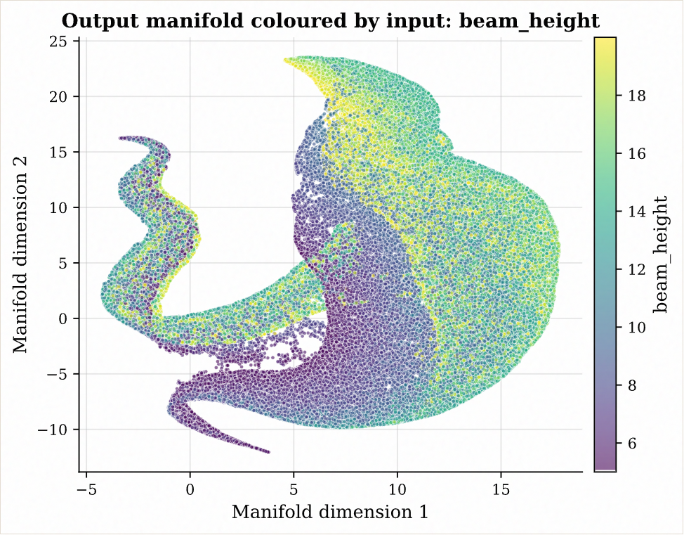
FIG 4a — Coloured by beam height h. Clear gradient along PC1 — height is the primary axis of response variance.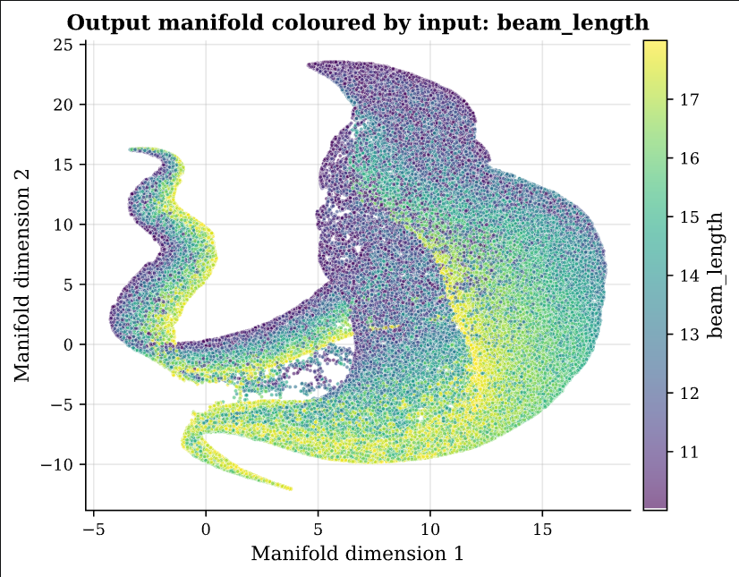
FIG 4b — Coloured by beam length L. Gradient oriented differently from height, confirming orthogonal influence on the manifold.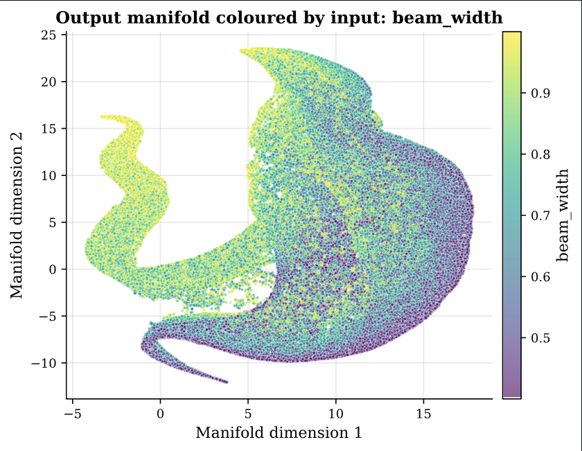
FIG 4c — Coloured by beam width w. Strongest saturation contrast — consistent with the Jacobian finding that w is the dominant sensitivity driver.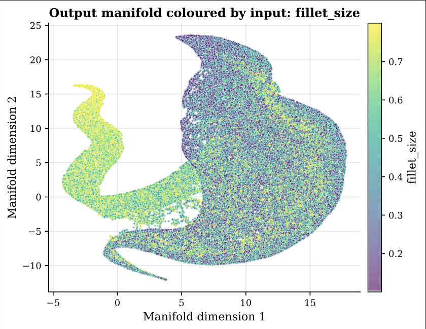
FIG 4d — Coloured by fillet radius. Weaker gradient — fillet is a secondary, nonlinear corrector, not a primary mode driver.The same 2D projection coloured by each output shows how the physical responses are distributed across the manifold — confirming the surrogate maps a smooth, well-structured surface:
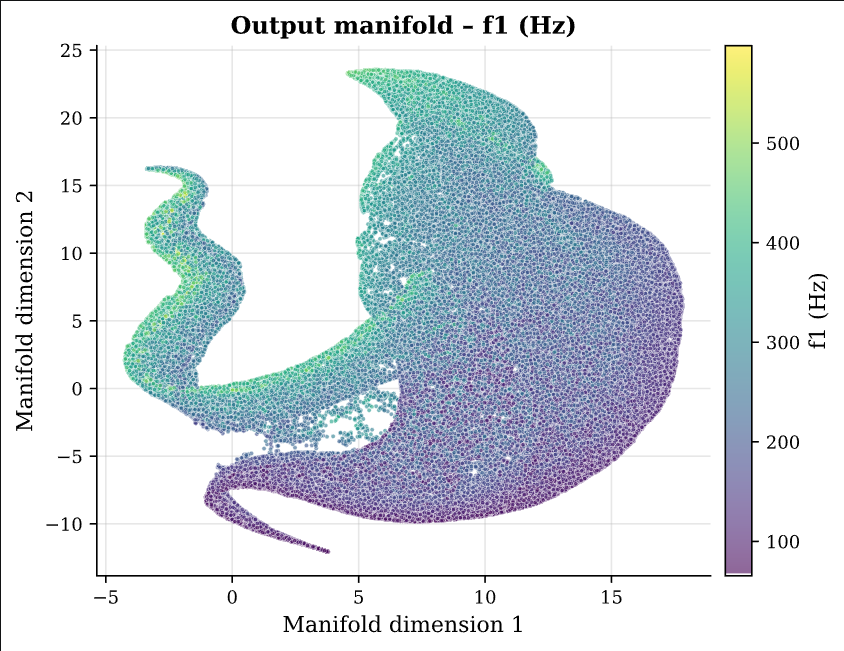
FIG 5a — Output manifold coloured by f₁. Smooth gradient = well-conditioned response surface; no islands or discontinuities.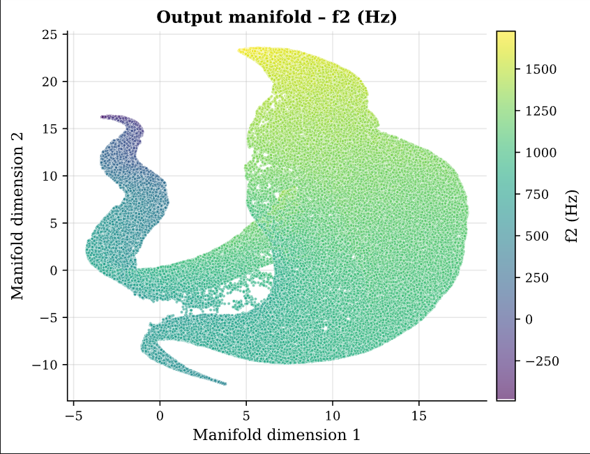
FIG 5b — Output manifold coloured by f₂.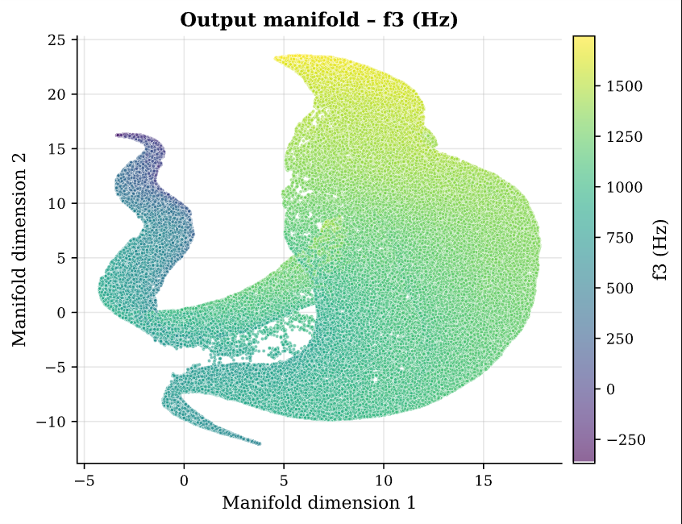
FIG 5c — Output manifold coloured by f₃.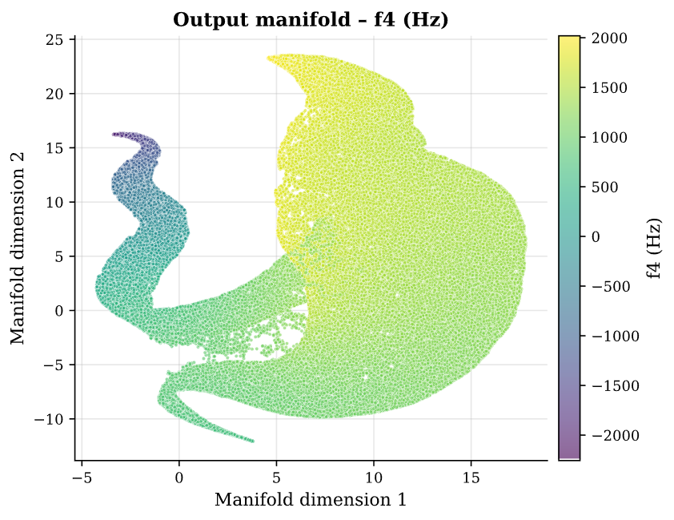
FIG 5d — Output manifold coloured by f₄.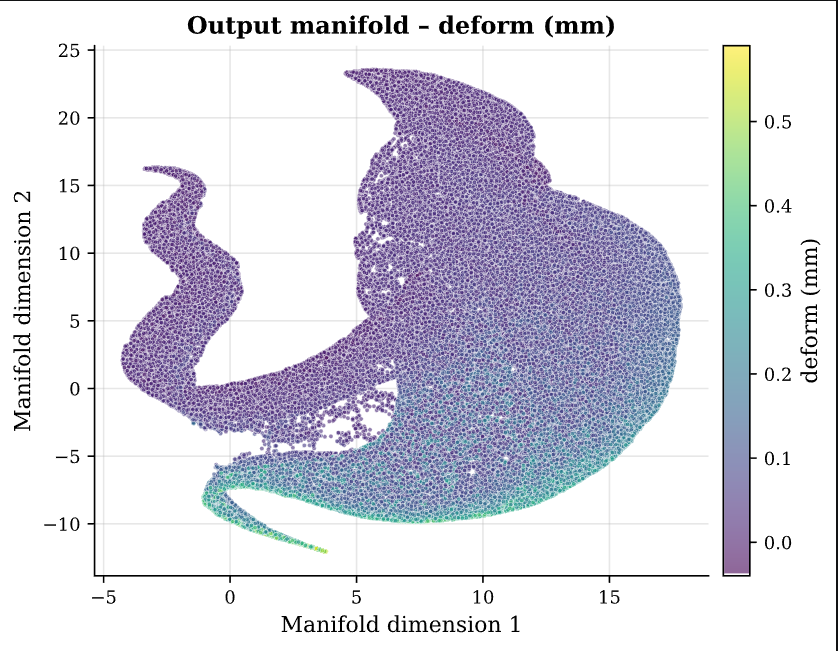
FIG 5e — Output manifold coloured by max deformation. Slightly less uniform than modal frequencies — consistent with nonlinear fillet contribution.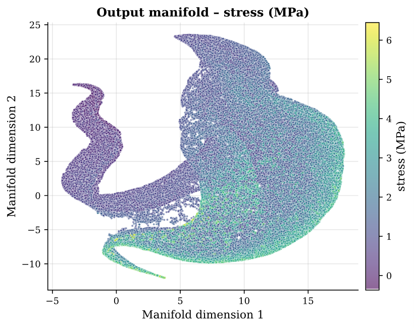
FIG 5f — Output manifold coloured by max stress. The stress surface shows the richest gradient structure, reflecting its higher sensitivity to all four inputs.Global Sensitivity via Jacobian Analysis
To eliminate "black-box" opacity, exact first-order sensitivities ∂output/∂input are
computed across the full training set using PyTorch autograd.
Because the ensemble members are scikit-learn MLPRegressors (no autograd support),
each model's weights are exported and reconstructed as a chain of
nn.Linear layers — making the forward pass differentiable without
retraining anything.
The global mean |J| heatmap summarises which inputs drive which outputs across the entire design space:
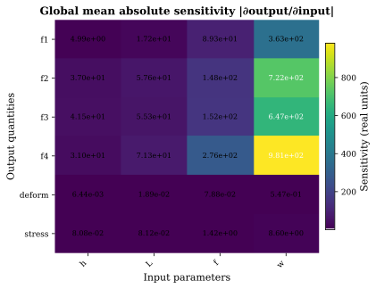
FIG 6 — Global mean |∂output/∂input| heatmap averaged over 1200+ points. Beam width w dominates modal frequencies and stress; fillet radius is the weakest global driver.Per-output Jacobian maps show how sensitivity varies across the design space — revealing nonlinear regimes and cross-coupling that the global mean conceals:
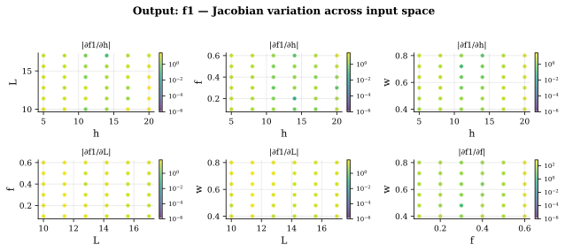
FIG 7a — Jacobian map for f₁. All four input sensitivities across the design space — width shows high, uniform sensitivity; fillet shows localised nonlinear response near low-fillet corners.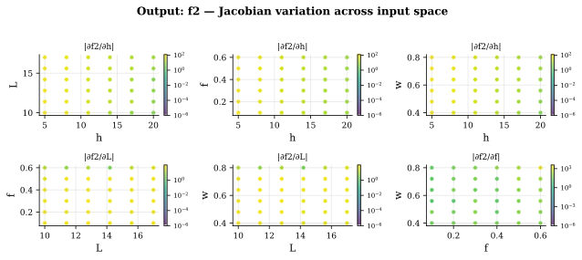
FIG 7b — Jacobian map for f₂.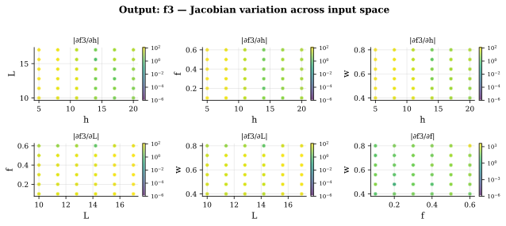
FIG 7c — Jacobian map for f₃.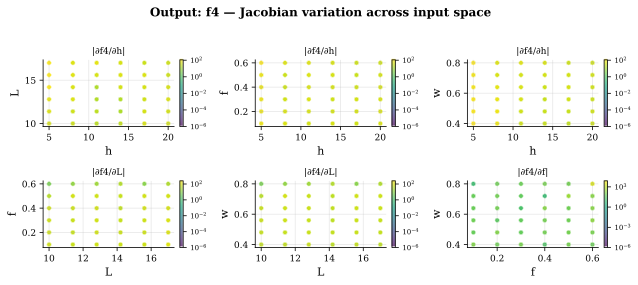
FIG 7d — Jacobian map for f₄.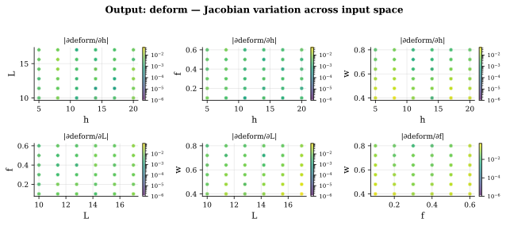
FIG 7e — Jacobian map for max deformation. Broader sensitivity distribution across inputs — consistent with the slightly higher MAPE on this output.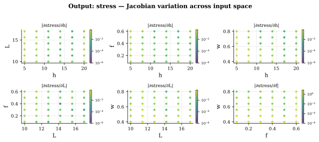
FIG 7f — Jacobian map for max stress. All four inputs show measurable sensitivity regions — stress is the most globally coupled output.The PyTorch reconstruction step is the methodological contribution here — not just running SHAP on a black box, but computing exact analytical derivatives of the learned function through the original network weights. This makes the sensitivity maps physically interpretable and directly comparable against beam-theory predictions.
Weight-Space Manifold of the Ensemble
For the ensemble's variance to be a meaningful uncertainty signal, the 20 models must represent genuinely different solutions — not converge to the same local minimum. UMAP on the ~4 700-parameter weight vectors of all 20 models tests this directly.
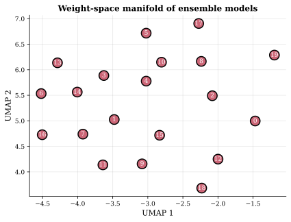
FIG 8 — UMAP projection of the 20 ensemble members in weight space. Uniform scatter with no clustering confirms genuine parameter diversity — validating that ensemble variance is an honest uncertainty estimate, not a degenerate collapse.Sample Run
Running optimize.py exercises the full surrogate pipeline. Objective constraints
defined in the OBJECTIVE block drive a multi-objective search; results are written
to plots/pareto/ as both a Pareto front plot and a companion CSV. A design point is
selected visually from the plot, confirmed in the CSV, and then verified against a fresh ANSYS
simulation.
 FIG 8 — Pareto front of the surrogate model's design space. Select a zone of
interest (e.g. f₂ ≈ 1000 Hz, f₁ ≈ 100 Hz) visually, then cross-reference coordinates in the CSV to
extract the corresponding input parameters.
FIG 8 — Pareto front of the surrogate model's design space. Select a zone of
interest (e.g. f₂ ≈ 1000 Hz, f₁ ≈ 100 Hz) visually, then cross-reference coordinates in the CSV to
extract the corresponding input parameters.
From the front, a candidate region was identified where the second modal frequency approaches 1000 Hz and the first stays near 100 Hz — a target separation ratio of roughly 10×. The corresponding entry in the Pareto CSV yields the selected design point below. Considering this is at the boundary of the design space so a bit of more error is expected.
Selected design point
Input Parameters
| beam_height | 14.3208 mm |
| beam_length | 14.1345 mm |
| fillet_size | 0.3018 mm |
| beam_width | 0.5016 mm |
Surrogate Predictions
| f₁ (target) | 124.56 Hz |
| f₂ (target) | 1098.28 Hz |
ANSYS Verification
| Metric | Surrogate | ANSYS |
|---|---|---|
| f₁ | 124.56 Hz | 123.15 Hz |
| f₂ | 1098.28 Hz | 1096.2 Hz |
What This Enables
The surrogate transforms the design loop from a sequential Simulate → Analyse → Revise cycle into a continuous Infer → Optimise → Verify workflow. Concrete capabilities unlocked:
- Pareto front exploration over modal separation vs. structural stress in milliseconds
- Global sensitivity ranking to focus physical testing on the most influential parameter (beam width)
- Uncertainty-flagged design candidates that require FEA re-evaluation before manufacture
- Interpretable, physics-consistent Jacobian maps that cross-validate the model against beam theory